دليل أطلس السماء التفاعلي
أطلس السماء خريطة حية تعرض لك السماء فوق مدينتك في أي ساعة تختارها، بأسماء النجوم العربية وبالكواكب والقمر في أماكنها الحقيقية، وهذا الدليل يشرح كل ما فيه خطوة بخطوة، فتعرف كيف تجد نجماً بعينه، وكيف تجهز لليلة رصد، وكيف تحفظ صورة السماء وتشاركها.
افتح الأطلس وابقِ هذه الصفحة مفتوحة بجانبه إن شئت، فتجرب كل خطوة وأنت تقرؤها.
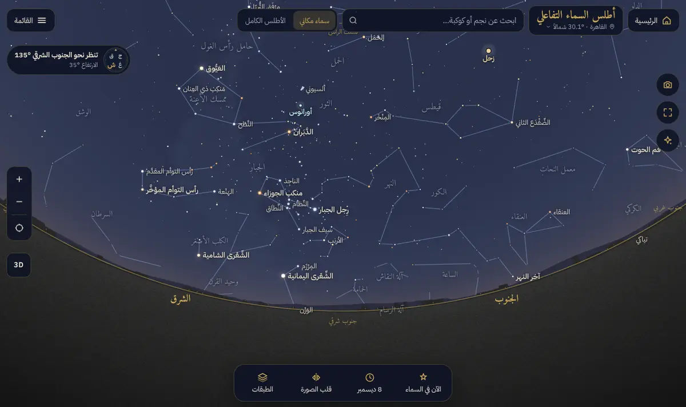
ابدأ في ثلاث خطوات
الخطوة الأولى أن تختار مكانك، فاضغط اسم المدينة في أعلى الشاشة، ثم اختر الدولة والمدينة من 373 مدينة عربية، أو من «دول العالم» التي فيها أكثر من ثلاثين ألف مدينة، أو اكتب أول حروف اسمها في خانة البحث، وإن ضغطت «استعمل موقعي الحالي» عرف الأطلس اسم بلدتك نفسها وكتبه مكان المدينة.
الخطوة الثانية أن تختار الوقت، والأطلس يبدأ دائماً من الآن، فإن فتحته نهاراً ظهر شريط يقول إن الشمس فوق الأفق وفيه زر «انتقل إلى التاسعة مساءً»، ويختفي الشريط وحده بعد ثوانٍ أو تغلقه بعلامة × في طرفه، وزر «الوقت» في الأسفل يأخذك إلى أي ساعة أو يوم تريده كما نشرح بعد قليل.
الخطوة الثالثة أن تنظر، فما تراه على الشاشة هو ما فوق أفقك في تلك اللحظة، والجهة التي تنظر إليها مكتوبة بجانب البوصلة الصغيرة أعلى الشاشة، ومعها درجتها من الشمال بين صفر و360، وارتفاعك فوق الأفق، فاسحب السماء نحو الجهة التي تقف أمامها في الحقيقة، وقارن النجوم اللامعة على الشاشة بالنجوم اللامعة فوقك.
التحرك في السماء والتكبير
تسحب السماء بإصبعك أو بالفأرة فتدور حولك، فالسحب يميناً ويساراً يغيّر الجهة، والسحب إلى أعلى وأسفل يغيّر الارتفاع، وتستمر السماء قليلاً بعد أن ترفع إصبعك ثم تقف، وإن واصلت السحب إلى أعلى عبرت سمت رأسك فظهر الأفق المقابل في أعلى الشاشة كأنك أملت رأسك إلى الخلف، والضغط على البوصلة يعيد العرض معتدلاً ويوجهك نحو الشمال.
وتكبّر بإصبعين على الهاتف أو بعجلة الفأرة على الحاسوب، والتكبير يتجه إلى المكان الذي تحت إصبعك أو المؤشر، والضغط مرتين على نجم يقرّبه ويضعه في الوسط، وعلى الحاسوب أزرار للتكبير والتصغير في الجانب الأيسر ومعها زر «عرض السماء كلها»، والرقم الذي عليه سهم دائري في أعلى الشاشة هو عرض ما تراه من السماء بالدرجات، يصغر كلما كبّرت ويكبر كلما صغّرت، والضغط عليه يعيد التكبير المعتاد.
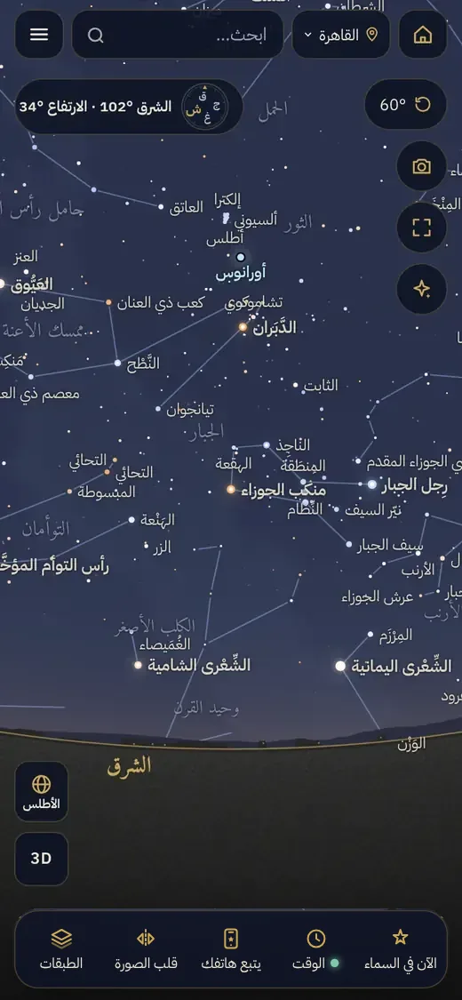
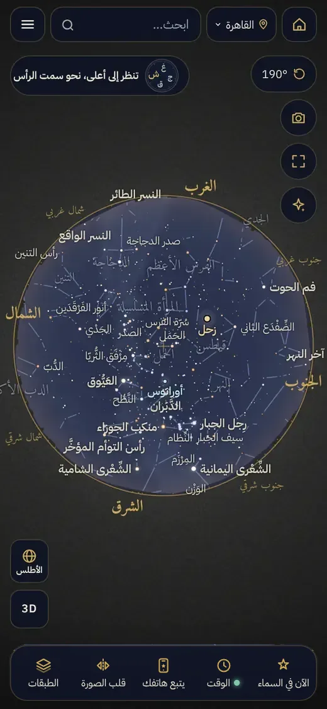
وحين تصغّر حتى تصير السماء كلها دائرة، يكون وسط الدائرة النقطة التي فوق رأسك مباشرة، وحافتها الأفق، وأسماء الجهات مكتوبة على حافتها، والجهة التي كنت تنظر إليها في أسفلها، وهذا أسهل عرض لتعرف أين يقع كل شيء في سماء الليلة دفعة واحدة.
سماء مكاني والأطلس الكامل
للأطلس طريقتان في العرض، «سماء مكاني» وهي ما تبدأ به، وتعرض ما فوق أفقك فقط كما تراه عينك، بلون السماء الحقيقي في تلك الساعة من النهار أو الشفق أو الليل، وبعدد النجوم الذي تسمح به أضواء المكان، و«الأطلس الكامل» الذي يعرض نجوم السماء كلها على خريطة واحدة، والشمال السماوي إلى أعلى كما في خرائط السماء المطبوعة، والجزء المظلل منها هو ما تحت أفقك الآن.
على الحاسوب تبدّل بين الطريقتين من الزرين في أعلى الشاشة، وعلى الهاتف بزر «الأطلس» في الجانب الأيسر، فضغطة تفتح الأطلس الكامل وضغطة ثانية تعيدك إلى سماء مكانك، والطريقتان موجودتان أيضاً في «الطبقات».
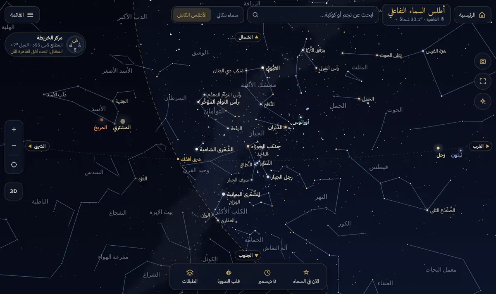
منظر 3D
زر 3D في الجانب الأيسر يضعك واقفاً في مدينتك، وحولك جبالها وتلالها الحقيقية في جهاتها الحقيقية، فترى جبال مكة حول المسجد الحرام، وجبل المقطم في جنوب شرق القاهرة، وجبال الأطلس من مراكش، وتضيئها الشمس أو القمر من جهتيهما، وتذوب البعيدة منها في ضباب الجو، والغيوم فيها من توقعات الطقس لمدينتك لنحو أسبوع، فإن كانت السماء ستمتلئ بالسحب الليلة رأيتها كذلك.
يدخل منظر 3D بلا خطوط كوكبات ولا أسماء، لأنه يعرض المكان كما تراه عينك، وتشغّلها متى شئت من «الطبقات»، وتكبّر فيه وتصغّر كما في المنظر العادي حتى 110 درجات على الهاتف و90 على الحاسوب، والشمس والقمر فيه بحجمهما الحقيقي في السماء، وحين تضغط الزر مرة ثانية تعود إلى الارتفاع والتكبير اللذين كنت عليهما قبله.
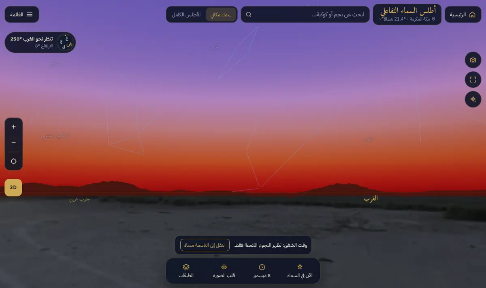
وجّه هاتفك نحو السماء
على الهاتف يتبع الأطلس حركة يدك، فترفع الهاتف نحو السماء فترى على الشاشة النجوم التي خلفه بأسمائها، والجرم الذي في وسط الشاشة يُكتب اسمه في الدائرة الصغيرة، وعلى أندرويد يبدأ ذلك وحده حين يصل الأطلس إلى بوصلة الهاتف، وعلى آيفون تظهر بطاقة «وجّه هاتفك نحو السماء» تطلب الإذن مرة واحدة.
والزر في أسفل الشاشة يبدّل بين «يتبع هاتفك» و«بإصبعك»، وإن سحبت السماء بإصبعك أثناء المتابعة توقفت قليلاً وظهر زر يعيدها، وإن صغّرتها بإصبعين حتى تريد السماء كلها توقفت المتابعة واستمر التصغير حتى القبة كاملة، ومعها رسالة فيها زر «عُد إلى متابعة الهاتف»، وزر البوصلة يفتح الضبط، ففيه زران يديران السماء خمس درجات يميناً أو يساراً إن لم تطابق السماء الحقيقية، وزر «أنا أنظر نحو الشمال الآن» حين لا يعرف الهاتف الشمال بدقة، ويمكنك أن تشغّل كاميرا الهاتف خلف النجوم، وأن ترى ما تحت الأفق باهتاً كأن الأرض شفافة.
والبوصلة في الهواتف تتأثر بالمعادن والمغناطيس القريبة، فإن رأيت السماء على الشاشة منحرفة عن السماء أمامك، فابتعد عن السيارة أو السور الحديدي، ثم صحّحها بزري الدرجات الخمس وأنت تنظر إلى نجم لامع تعرفه.
بطاقة كل جرم
تضغط أي نجم أو كوكب أو سديم أو كوكبة فتفتح بطاقته، وفي أعلاها اسمه العربي واسمه العالمي، ثم لمعانه وبُعده، وهل هو فوق الأفق الآن، و«أنسب وقت للرؤية» وهو الشهر الذي يكون فيه أعلى ما يكون نحو التاسعة مساءً، ثم سطر يقول متى خرج الضوء الذي يصل عينك الليلة منه، فإن كان النجم على بعد خمسمئة سنة ضوئية فأنت ترى الليلة ضوءاً خرج منه قبل خمسة قرون.
وزر «اعرضه مع كوكبته وحدها» يخفف كل ما حوله ويرسم كوكبته واضحة، وزر «كل التفاصيل» يفتح أقساماً عن اسمه عند العرب، وما ورد عنه في القرآن الكريم إن ورد، وكيف تجده بعينك، وتاريخه، وما تراه بالعين أو المنظار، وفي آخر البطاقة زر يفتح صفحته الكاملة في الموسوعة، وفي أعلى بطاقة النجم والكوكبة أربعة أزرار صغيرة: النجمة تضيفه إلى «نجومي»، والعين تخفيه من السماء، والرابط يشاركه، والإغلاق.
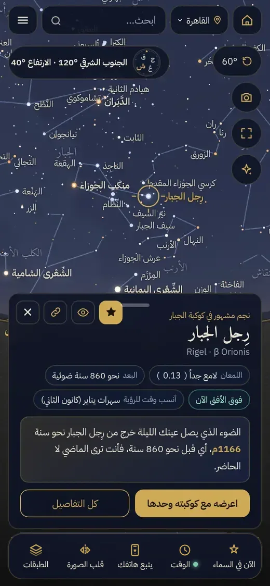
وفي بطاقة الكوكب زر «قرّب إليه»، فيكبّر الأطلس الكوكب حتى يظهر قرصه بحجمه الحقيقي تلك الليلة، فترى طور الزهرة، وحلقات زحل بميلها، وأقمار المشتري الأربعة الكبيرة في أماكنها، ويتبع الأطلس الكوكب وهو يتحرك مع دوران السماء، وإن كان كوكبان متقاربين في السماء قالت بطاقة كل منهما كم بينهما، وأن قربهما في اتجاه النظر فقط.
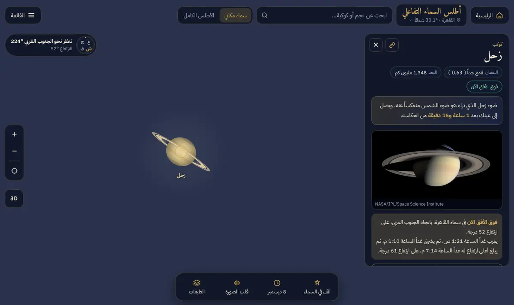
وإذا كان القمر أمام الشمس في الوقت الذي تعرضه، قالت بطاقة الشمس والقمر إنه كسوف، وكم يحجب القمر من قرص الشمس، وفيها زر «قرّب إلى الكسوف» يكبّر الشمس حتى ترى القمر يقضم قرصها، ومعه تخفت السماء بقدر ما حُجب من الشمس، وفي الكسوف الكلي تظلم ويظهر الإكليل حول القمر والكواكب وألمع النجوم. وفي صفحة الخسوف والكسوف لكل مدينة رابط «شاهده في أطلس السماء» يفتح الأطلس على الكسوف القادم كما يُرى منها.
البحث والجولة المرشدة
خانة البحث في أعلى الشاشة تفهم الأسماء العربية والعالمية معاً، فتكتب «الشعرى» أو «Sirius» أو «سهيل» أو «M42» أو «الثريا» أو اسم منزلة من منازل القمر، فيظهر الجرم واضحاً في مكانه الآن ومعه كوكبته وما حوله باهت، وتكتب «درب التبانة» فيشغّل طبقته، و«الأسديات» أو «زخة شهب» فيظهر مشع الزخة. وإن كتبت اسم مدينة مثل «أوسلو» ظهر لك «ابحث عن «أوسلو» بين المدن»، فيفتح لوح المكان على المدينة نفسها.
وإن كانت هذه أول مرة لك مع السماء فابدأ بـ«جولة مرشدة» من القائمة، وهي ثلاث عشرة محطة تبدأ بكوكبة الجبار ومنكب الجوزاء وسديم الجبار، ثم تمشي بك من الحزام إلى الشعرى اليمانية، ومن الدب الأكبر إلى النجم القطبي، حتى تصل إلى مجرة المرأة المسلسلة أبعد ما تراه العين، و«تعريف سريع بالأطلس» في القائمة نفسها يعيد عليك أهم الأزرار في ست خطوات، وفي القائمة أيضاً «تصفّح الأجرام» بأسماء النجوم والكوكبات والأجرام كلها.
الآن في السماء والوقت
زر «الآن في السماء» في أسفل الشاشة يكتب لك ما في سماء مدينتك الآن: هل هو نهار أو شفق أو ليل، ومتى يأتي الحدث التالي للشمس، وطور القمر ومكانه، ثم القمر والكواكب الظاهرة وارتفاع كل منها ووقت غروبه، وألمع النجوم، والكوكبات الواضحة فوقك، والأجرام التي تراها بمنظار، ومعها شريط ملون من توقعات الطقس يقول هل تناسب سماء الليلة الرصد.
وزر «الوقت» يفتح شريطاً يمتد أربعاً وعشرين ساعة من ظهر اليوم إلى ظهر الغد، لونه من ارتفاع الشمس، وتحته خط حيث يكون القمر فوق الأفق، وعليه مواعيد الغروب ونهاية الشفق وطلوع الفجر والشروق وشروق القمر وغروبه، فتسحبه لترى السماء في أي ساعة من الليلة، ومعه أزرار ساعة ويوم إلى الأمام والخلف، وزر «تسريع» يدير السماء أمامك، وزر «الآن» يعيدك، وخانة تاريخ تأخذك إلى أي يوم في أي سنة.
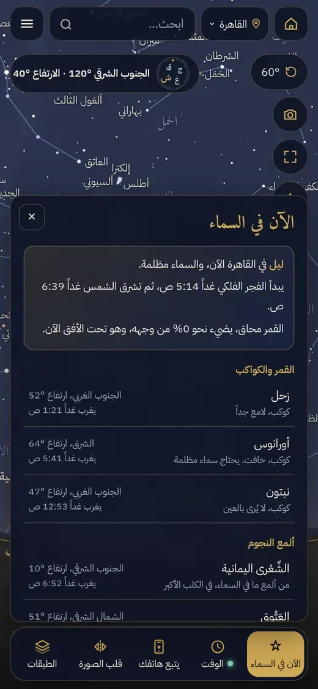
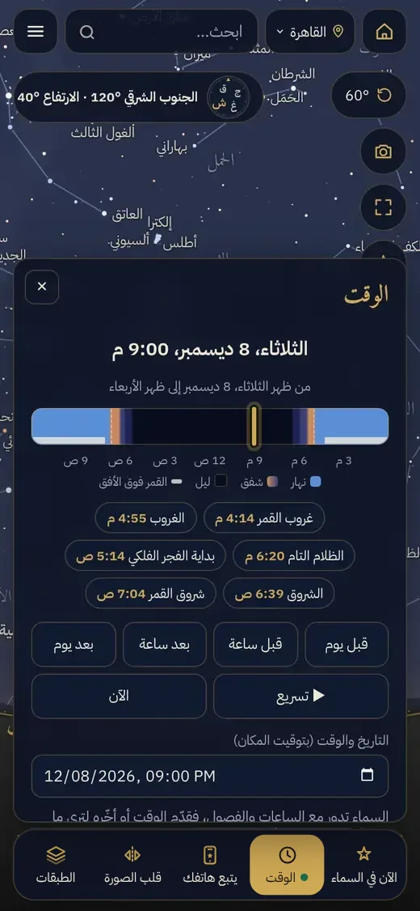
الطبقات وطريقة العرض
زر «الطبقات» يفتح لوحاً من ثلاثة أقسام، أولها «ما يظهر»، وفيه الطريقتان سماء مكاني والأطلس الكامل، ثم مفاتيح ما يُرسم على السماء، وكل مفتاح يعمل ويتوقف بلمسة، ويبقى اختيارك محفوظاً في متصفحك للمرة التالية:
| الطبقة | ما ترسمه |
|---|---|
| خطوط الكوكبات | أشكال الكوكبات كما تراها العين، و«الشكل الكامل» يضيف نجومها الخافتة |
| أسماء الكوكبات وأسماء النجوم | الأسماء العربية، وتكثر كلما كبّرت، وإيقافها يخفيها أيضاً من السطر الذي تحت دائرة الوسط في متابعة الهاتف |
| الكواكب والقمر | الشمس والقمر والكواكب في أماكنها الحقيقية |
| أسماء الكواكب والقمر | اسم كل كوكب بجوار نقطته وبلونها، وإيقافها يُبقي الكواكب بلا أسماء، ويبقى اسم ما تختاره منها |
| درب التبانة | شريط مجرتنا الباهت، ويظهر في الليل المظلم بعيداً عن الأضواء |
| الغيوم | سحب الليلة من توقعات الطقس في منظر 3D |
| ما تحت الأفق | النجوم الغاربة باهتة كأن الأرض شفافة، ويشغّلها الأطلس وحده حين تبحث عن جرم تحت الأفق ثم يطفئها حين تغلق بطاقته |
| الشبكة ودائرة البروج وحدود الكوكبات | خطوط الارتفاع والإحداثيات، وطريق الشمس بين النجوم، وحدود كل كوكبة كما رسمها الاتحاد الفلكي الدولي |
| الأشكال الدليلة والسدم والمجرات ومنازل القمر | مثلث الشتاء ومثلث الصيف وأمثالهما، وأجرام قائمة ميسييه، والمنازل الثماني والعشرون |
| مشعات زخات الشهب | النقطة التي تبدو شهب الزخة كأنها تخرج منها، وتظهر في الأيام التي تنشط فيها الزخة فقط، وأوضح ليلة الذروة، فتضغطها لترى موعد الذروة ورابط صفحة الزخة |
والقسم الثالث «الشكل»، وأهم ما فيه «ضوء المكان حولك»، وهو أربع درجات: وسط مدينة، وطرف مدينة، وريف، وصحراء مظلمة، فكلما أظلم المكان ظهرت نجوم أخفت وصار لون السماء أعمق وظهر درب التبانة، فأخفت ما يظهر نحو القدر 4.6 في وسط المدينة ونحو 6 في الصحراء المظلمة، فاختر الدرجة التي تشبه مكانك ترَ على الشاشة قريباً مما تراه عينك، وفيه أيضاً «رؤية ليلية» تحوّل الشاشة إلى الأحمر فلا تفقد عينك تكيّفها مع الظلام، و«ملء الشاشة».
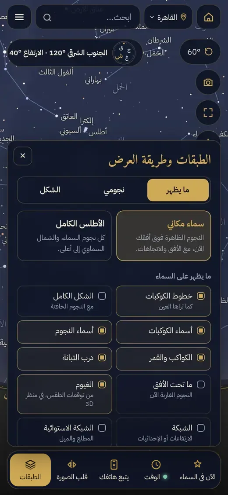
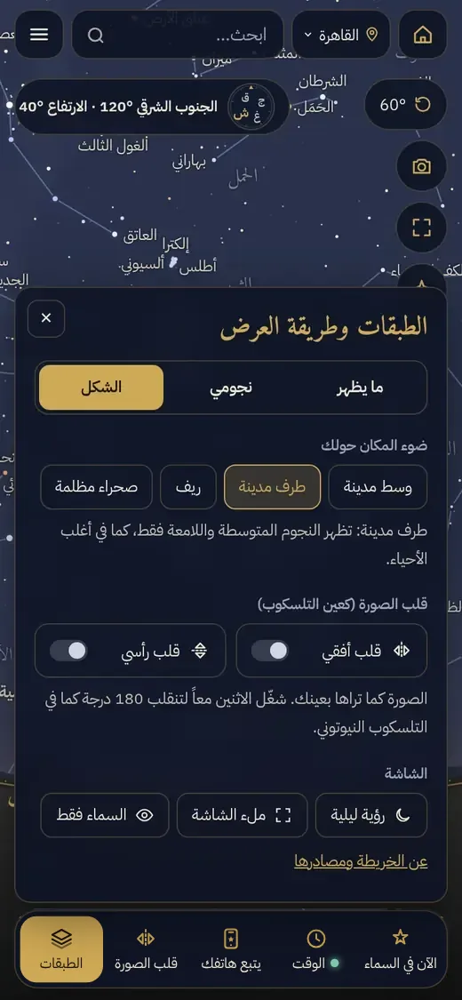
نجومي: اعرض ما تختاره وحده
القسم الثاني من «الطبقات» اسمه «نجومي»، وفيه زر «اختر من السماء»، فتضغطه ثم تضغط في السماء النجوم والكوكبات التي تريدها، فتظهر حول كل نجم حلقة ذهبية واسم كل كوكبة في إطار، والضغطة الثانية على الشيء نفسه تلغي اختياره، والضغط على مكان ليس فيه نجم يختار الكوكبة التي في ذلك المكان، ثم تضغط «تم» فتبقى في السماء النجوم والكوكبات التي اخترتها وحدها، ومعها الشمس والقمر والكواكب.
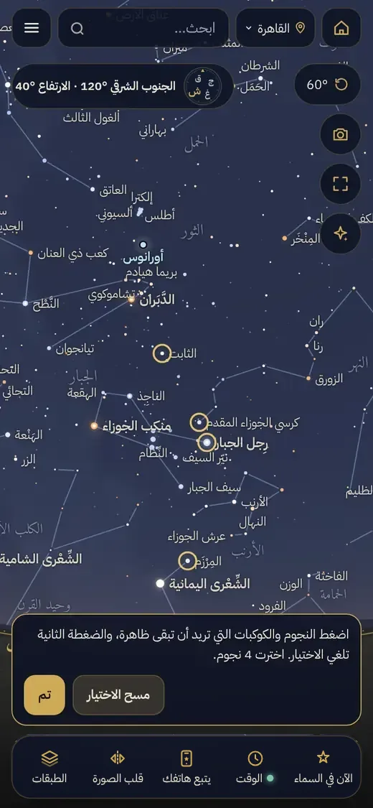
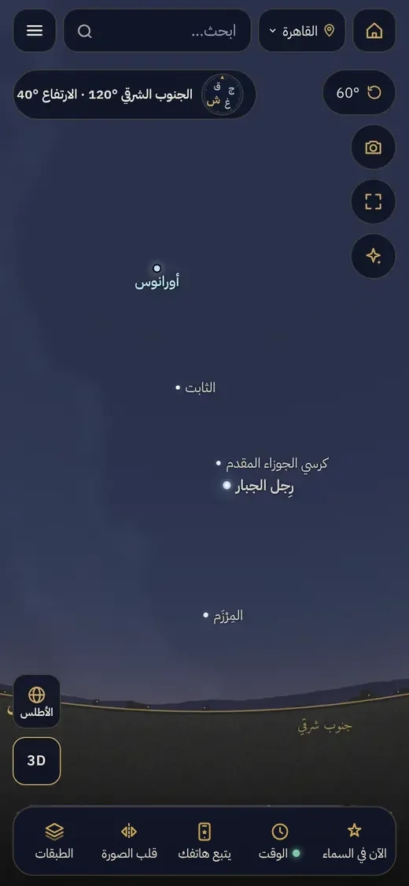
وفي القسم نفسه زر «اعرض المختار فقط» يشغّل ذلك ويوقفه دون أن يمسح اختيارك، ومفتاح «أبقِ الباقي باهتاً بدل إخفائه» لمن يريد أن يعرف مكانه بين بقية النجوم، وقائمة بما اخترته تزيل منها ما تشاء، وتحتها «كوكبات ونجوم مخفية»، وهي العكس، فتختار من السماء ما تريد إخفاءه ويبقى الباقي، أو تكتب اسمه في خانة البحث فيه، ويبقى كل ذلك محفوظاً في متصفحك.
وهناك طريق أسرع لمن يعرفه، وهو الضغطة الطويلة على الهاتف أو زر الفأرة الأيمن على الحاسوب فوق أي نجم أو كوكبة، فتظهر قائمة صغيرة فيها «تفاصيله» و«اعرض النجم وحده» و«أضفه إلى نجومي» و«أخفِ النجم»، وفوق الكواكب والسدم «قرّب إليه»، وكل ما فيها موجود أيضاً في البطاقة وفي «الطبقات»، فلا يفوتك شيء إن لم تعرفها.
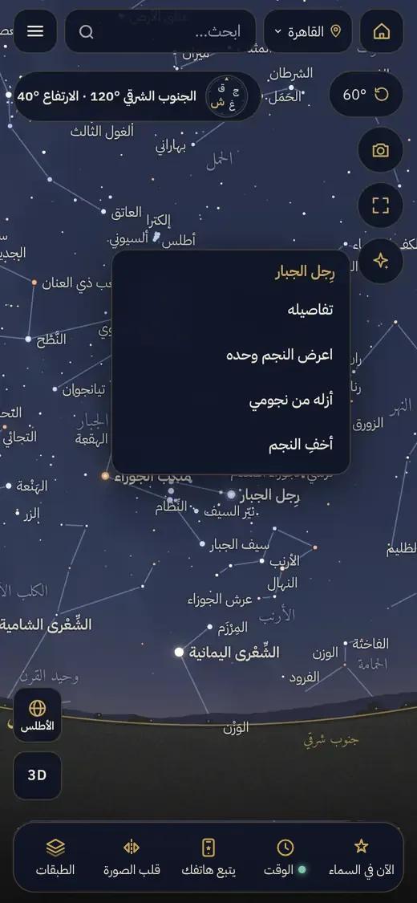
السماء فقط وصورة السماء
تحت رقم التكبير في أعلى الشاشة أزرار صغيرة، الأول عليه صورة كاميرا، والثاني عليه مربع زواياه مفتوحة، وهو يملأ الشاشة فيختفي شريط المتصفح وتبقى أزرار الأطلس، وإن لم يسمح المتصفح بذلك أخفى أزرار الأطلس بدلاً منه وقال لك السبب، والأخير عليه عين، وهو يخفي الأدوات كلها لتبقى السماء وحدها على الشاشة، ويبقى في الركن زر صغير مكتوب عليه «الأدوات» يعيدها، ويصير شفافاً بعد ثوانٍ حتى لا يشغلك، وزر الرجوع في الهاتف يعيد الأدوات أيضاً، وعلى الحاسوب زر H.
وزر الكاميرا يصنع صورة لما على الشاشة الآن، وتحتها شريط فيه اسم مدينتك واليوم والساعة واسم الموسوعة، فتراها في لوح صغير قبل أن تحفظها، ثم تضغط «حمّل الصورة» فتُحفظ في جهازك، أو «شارك الصورة» على الهاتف فتفتح قائمة المشاركة وتنشرها في حالة واتساب أو فيسبوك أو ترسلها لمن تشاء، والصورة لا تظهر فيها الأزرار أبداً، فإن أردت السماء كلها في صورة واحدة فصغّرها حتى تصير دائرة ثم صوّرها.
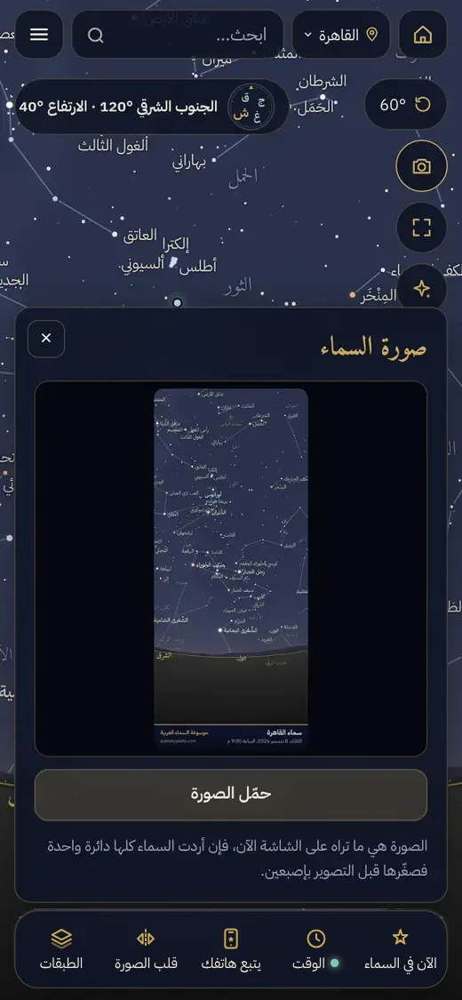
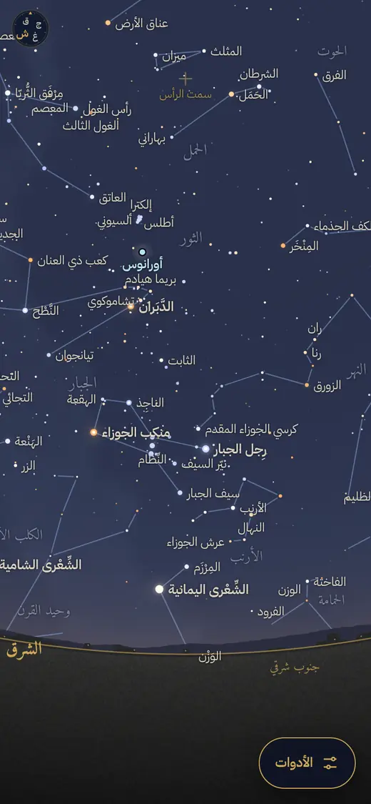
إطار المنظار أو التلسكوب أو الكاميرا
في القائمة بند «إطار المنظار أو التلسكوب» يرسم في وسط الشاشة دائرة أو مستطيلاً بحجم ما يدخل في مجال عدستك، فتحرك السماء تحته وتعرف قبل أن تخرج هل يتسع منظارك للثريا كلها، أو هل تدخل مجرة المرأة المسلسلة في صورة كاميرتك. تختار المنظار وتكتب مجال الرؤية المكتوب عليه بالدرجة أو بالأمتار على بعد 1000 متر، أو التلسكوب وتكتب بعده البؤري والبعد البؤري للعينية ومجالها الظاهري، أو الكاميرا وتكتب البعد البؤري للعدسة وتختار حجم المستشعر، فيكتب الأطلس مجال الرؤية الحقيقي والتكبير، ويحفظ اختيارك في متصفحك.
روابط تشاركها
لكل جرم في الأطلس رابط باسمه، مثل arabskypedia.com/atlas/#betelgeuse لمنكب الجوزاء و#orion لكوكبة الجبار و#saturn لزحل، فمن يفتحه يرى ذلك الجرم مباشرة، وزر الرابط في البطاقة يصنع رابطاً يحمل معه مدينتك والوقت المعروض إن لم يكن الآن، فإن أرسلت لصديق رابط القمر الليلة في جدة رأى سماء جدة في تلك الساعة دون أن تتغير مدينته المحفوظة، وعلى الهاتف يفتح الزر قائمة المشاركة مباشرة.
اختصارات لوحة المفاتيح
| المفتاح | ما يفعله |
|---|---|
| ← → ↑ ↓ | تحريك السماء كالسحب |
| + − | التكبير والتصغير |
| H | السماء فقط، وإعادة الأدوات |
| N | الرؤية الليلية الحمراء |
| F | ملء الشاشة |
| Esc | إغلاق اللوح أو البطاقة أو القائمة المفتوحة |
حين لا يظهر ما تتوقعه
- لا أرى نجوماً: ربما الوقت نهار، فاضغط «انتقل إلى التاسعة مساءً»، أو اخترت «وسط مدينة» في ضوء المكان فقلّت النجوم، أو شغّلت «اعرض المختار فقط» في «نجومي».
- نجم بعينه اختفى: ربما أخفيته، فافتح «الطبقات» ثم «نجومي» تجده في «كوكبات ونجوم مخفية» ومعه زر «إظهار».
- الصورة مقلوبة، أو الشمال عن يسارك وأنت تنظر نحو الغرب: «قلب الصورة» مفعّل، فأوقف مفتاحيه من زر «قلب الصورة» في الشريط السفلي.
- الشرق على يسار الشاشة حين تصغّر السماء حتى تصير دائرة: هذا صحيح، لأن الدائرة هي السماء كما تراها وأنت تنظر إلى أعلى، فإذا استلقيت على ظهرك ورأسك نحو الشمال كان الشرق عن يسارك، أما إذا وضعت الهاتف على ظهره ونظرت إليه من فوق كما تنظر إلى خريطة، فشغّل «قلب أفقي» من زر «قلب الصورة» في الشريط السفلي، فيصير الشرق عن يمين الشمال كما في الخرائط.
- الأدوات اختفت: اضغط «الأدوات» في الركن، أو زر الرجوع في الهاتف، أو H على الحاسوب.
- السماء على الهاتف منحرفة عن الحقيقية: افتح زر البوصلة واضبطها بزري الدرجات الخمس، أو بزر «أنا أنظر نحو الشمال الآن» وظهر الهاتف نحو الشمال.
- «موقعي» لم يعمل: الأطلس يكتب السبب، فإن كان المتصفح ممنوعاً من الموقع فاسمح له من إعداداته، أو اختر مدينتك من القائمة.
- لا إنترنت: بعد زيارتك الأولى يفتح الأطلس بلا اتصال، لكن الغيوم وتوقعات الطقس تحتاج الاتصال.
ما بعد الأطلس
الأطلس يريك أين تنظر، ودروس تعلّم قراءة السماء تعلّمك كيف تجد الشمال وتقيس الارتفاع بيدك وتقفز من نجم إلى نجم، وصفحة ماذا في السماء الليلة تكتب لك سماء مدينتك الليلة في صفحة واحدة، والنجوم والكوكبات والأجرام العميقة في الموسوعة تشرح كل ما تراه، ومصادر بيانات الأطلس مذكورة في لوح «عن الخريطة» داخله وفي صفحة المصادر.